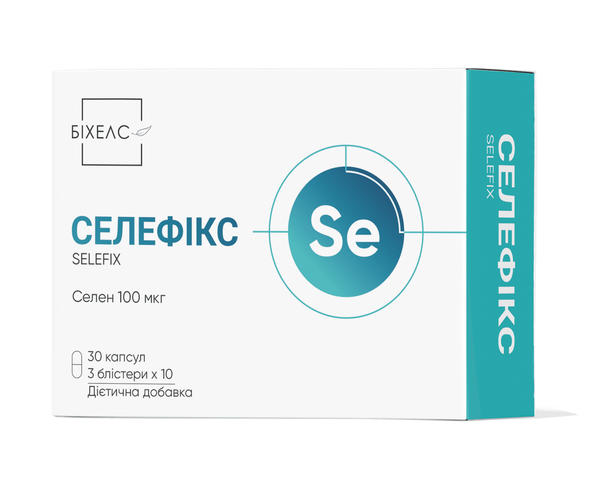
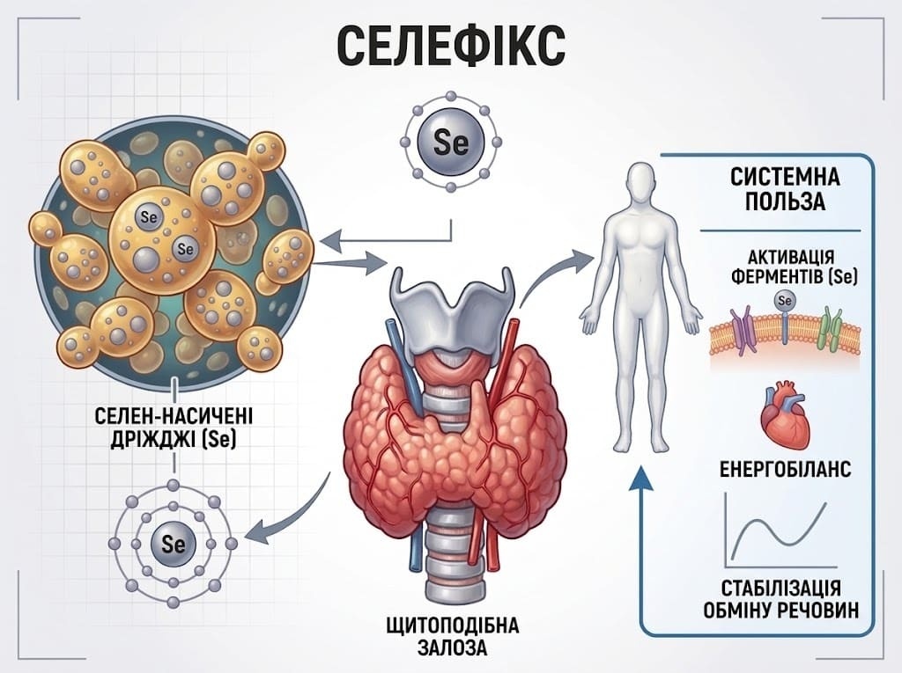

Селефікс
Селефікс — органічний селен із неактивних дріжджів: тривала підтримка щитоподібної залози та антиоксидантний захист

Селефікс (капсули №30)
Дріжджі, збагачені селеном (Saccharomyces cerevisiae) - 50 мг (mg), що відповідає 100 мкг (mcg) селену. (181,8%)
Спеціалізована дієтична добавка для підтримки функцій щитоподібної залози, периферичної конверсії тиреоїдних гормонів, захисту тиреоцитів від антитіл та оксидативного стресу, а також зміцнення імунного захисту та здоров'я шкіри, волосся й нігтів.

Склад та активні речовини
1 капсула містить:
- Селен в органічній біодоступній формі: Дріжджі, збагачені селеном (Saccharomyces cerevisiae) - 50 мг (mg), що відповідає 100 мкг (mcg) селену. (181,8%)
- Допоміжні речовини: наповнювач: целюлоза мікрокристалічна; антизлежувальні агенти: стеарат кальцію, діоксид кремнію; оболонка капсули: желатин, барвник оксид цинку.
Властивості компонентів
- Селен: Входить до складу ферменту глутатіонпероксидази, який захищає тиреоцити від шкідливої дії пероксиду водню при синтезі гормонів, а також є софактором селен-залежних дейодиназ, що забезпечують перетворення неактивного прогормону тироксину (T4) в активний трийодтиронін (T3).
Рекомендації до застосування
- Нормалізація функціонального стану щитоподібної залози при аутоімунному тиреоїдиті (АІТ, хвороба Хашимото);
- Ейтиреоїдний та ендемічний зоб, заповнення дефіциту селену в організмі;
- Зниження рівня антитіл до тиреопероксидази (Ат-ТПО) та тиреоглобуліну (Ат-ТГ);
- Підтримка репродуктивного здоров'я, чоловічої фертильності (сперматогенезу) та імунної системи;
- Покращення стану шкіри, волосся та нігтьових пластин.
Спосіб застосування та дози
Вживати дорослим по 1 капсулі 1 раз на добу під час прийому їжі, запиваючи достатньою кількістю питної води. Рекомендований термін застосування — від 3 місяців (надалі тривалість та можливість повторного курсу узгоджуються з лікарем).
Протипоказання
Підвищена індивідуальна чутливість до складових компонентів, вагітність, період лактації, дитячий вік.